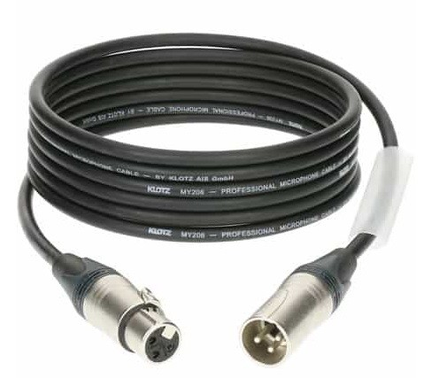
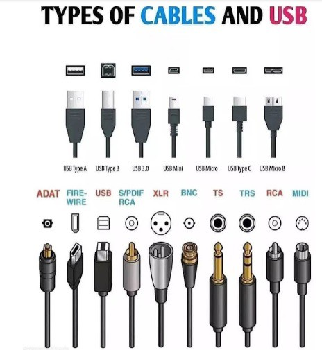

חשיבות הנושא
אחרי שהתלמיד הכיר את המצלמה ואת סוגי המיקרופונים, הגיע שלב ההקלטה. בשלב זה התלמיד צריך לדעת לבצע הקלטה, ולדאוג לאקוסטיקה טובה ולציוד מתאים להקלטה. עליו להכיר את כל אביזרי ההקלטה ולדעת מהי אחריותו בעת הקלטת הקול בהפקת הסרט.
תת-נושאים ומטרות אופרטיביות
תת-הנושאים:
- ה.1 ההכנות להקלטה.
- ה.2 שלב ההקלטה.
- ה.3 אביזרי הקלטה.
מטרות אופרטיביות:
- התלמיד ידע מהי אחריותו של איש הקול בכל השלבים של הפקת הסרט.
- התלמיד יכיר את סוגי המיקרופונים השונים ואת אביזרי ההקלטה: כבלים, מחברים וכדומה, וידע להשתמש בהם.
- התלמיד יכיר את המצלמה בכל הקשור לסאונד שבה, יכיר את המושג פנטום וידע למה הוא משמש.
ה.1 ההכנות להקלטה
קדם הפקה
התהליך מתחיל בשלב קריאת התסריט בפגישה עם הבמאי והמפיק. לאחר קריאת התסריט על איש הקול לעשות סיור להכרת אתרי הצילום. בסיור זה יבדוק איש הקול את המבנה האקוסטי של כל החללים ואת ההפרעות האקוסטיות בסביבת אתר הצילומים.
איש הקול ירשום את הערותיו. למשל: רעש חיצוני, מזג אוויר, זוויות הקלטה, אמביאנס, וציוד מיוחד שדרוש לצילומים. בישיבת ההפקה שלפני הצילומים יציג איש הקול את הבעיות הקיימות באתרי הצילומים. על ההפקה לדאוג לטפל בבעיות אלו לפני תחילת הצילומים.
חשוב לדעת: מפיקים או במאים שחוסכים את שלב הסיור באתרי הצילומים גורמים עוול לאנשי הקול ולעצמם. איכות הקול עלולה להיפגם בצורה אקוטית בצורה שלא ניתנת לתיקון בעריכה.
הכנות לקראת ההקלטה
- התלמיד יקבל את התסריט, "יקרא אותו באוזניים", יבין אותו ויכתוב לעצמו כל אפקט קול וטרק אווירה שהוא חושב שיועילו ויתרמו לפסקול. בדרך זו הוא גם יהיה יצירתי ויתרום רעיונות לבמאי.
- התלמיד יהיה נוכח בסיור הלוקיישן ויערוך בדיקות למבנה האקוסטי של החללים. בדיקת החלל הפנימי נעשית על ידי מחיאת כף אחת והקשבה להחזרי הקול מקירות החלל. ככל שההחזרים מרובים יותר נוצר הד שמונע אפשרות להקלטת קול איכותית.
- התלמיד ידאג לשטיחים או לשמיכות לקראת הצילומים במידת הצורך.
- התלמיד יבדוק את האתר מבחוץ כדי לאתר הפרעות אקוסטיות: קרבה לכביש סואן או לתחנת אוטובוס, אתר בנייה, קרבה לגן ילדים או לבית ספר, בעלי חיים שמרעישים בכל פעם שעובר כלי רכב או אדם.
- בסיור הלוקיישן יקליט התלמיד המשמש כאיש הקול את האמביאנס כדי שהבמאי והמפיק יקשיבו בישיבת ההפקה ויחליטו אם ניתן לצלם ולהקליט באתר.
- התלמיד יחליט באילו סוגי מיקרופונים עליו להשתמש בזמן הצילומים בהתאם למספר המשתתפים, זוויות הצילום וגודל הפריים.
- התלמיד יכיר היטב את הציוד שהוא משתמש בו, יבדוק את תקינותו וידאג להשתמש בו בצורה הנכונה.
ה.2 שלב ההקלטה
הפקה
בשלב ההקלטה ביום הצילומים ידאג איש הקול לבדוק את כל הציוד הדרוש להקלטה ויהיה מוכן להקליט בהתאם ללו"ז ההפקה. במשך יום הצילומים יבדוק איש הקול מספר פעמים את איכות ההקלטה.
שלב ההקלטה הוא השלב שבו מוקלט הקול במדיה הדיגיטלית באיכות מקסימלית. הקלטה זו תשמש כפסקול העיקרי בסרט. בזמן ההקלטה יקשיב התלמיד לדיאלוגים הנאמרים בהתאם לתסריט, לרעש הסביבתי בזמן הצילום, ויחליט בסוף הטייק אם הם שמישים וטובים.
עצות להקלטה טובה:
- היו מוכנים תמיד להקלטה לפני שמתחילים לצלם.
- נסו לא לעכב את הצילומים ככל האפשר, למעט במקרה של תקלה בהקלטה או רעש בלתי צפוי.
- שליטה על המרחב האקוסטי של הסט היא ערובה להקלטה טובה.
- אם אפשרי, הקליטו דיאלוגים עם מינימום רעשי אווירה. ייתכן שבעריכה העורך יחליט להכניס רעשי אווירה אחרים שייתנו לסצנה יותר כוח מרעשי הרקע הקיימים.
- חשוב להקליט קולות רקע ואווירה לאחר כל סצנה, לאורך היום. האווירות משתנות לאורך היום, ואווירה שצולמה בבוקר לא מתאימה לזו שצולמה באותו מקום בצהריים או בערב.
- אף פעם אל תקליטו כאשר נשמעים ברקע מוזיקה או רדיו שפועל. נוכחות של מוזיקה לא תאפשר עריכה נאותה ותגרום לקפיצות לא הגיוניות במוזיקה בהתאם לקאטים.
ה.3 אביזרי הקלטה
מצלמה: המצלמה היא מכשיר ההקלטה. הקול מוקלט על כרטיס שנמצא במצלמה. התלמיד יכיר את המצלמה בכל הקשור לסאונד שבה. ערוצי הקול: 2-CH 1-CH. כניסות XLR, חיבור לאוזניות, כניסות LINE ,MIC ו-48ּ+MIC (פנטום). כיוון גובה הקול בזמן ההקלטה, הקלטה פנימית או חיצונית, אוטומטית או ידנית.
כבל מיקרופון: כבל שמעביר את האות החשמלי בין המיקרופון למכשיר ההקלטה. הכבל הוא כבל קואקסיאלי בנוי עם סיכוך בפנים. יש להקפיד לקפל ולגלגל את הכבל כדי לשמור על תקינותו.
מחברי קול: יש סוגים שונים של מחברים. התלמיד יכיר אותם וידע ולהבחין ביניהם: RCA, PL, MINI PL, XLR. יש מתאמים בין סוגי המחברים.
בום: המקל שמחזיק את המיקרופון הקיבולי נקרא בום. זהו מוט טלסקופי שנפתח על ידי פרקים ומגיע לאורך של ארבעה-חמישה מטרים. בקצהו מרכיבים את מחזיק המיקרופון או בולם הזעזועים. אין להדביק דבק כדי לחבר את הכבל לבום.
מחזיק מיקרופון: זוהי יחידה שמתחברת לגוף המיקרופון על ידי לחץ קל. בתחתית מצויה הברגה שמתחברת לבום או למעמד רגל או שולחן.
בולם זעזועים: מגע יד על מחזיק המיקרופון, תוך כדי חיכוך או תזוזה של היד הלוך וחזור, יעביר רעשים וקליקים בזמן ההקלטה. כדי למנוע בעיות אלו יצרו למיקרופון אוחז עם בולם זעזועים שנועד לשכך זעזועים מכניים שהמיקרופון קולט דרך גופו.
מגן רוח: מכיוון שהמיקרופון רגיש לרוח טבעית או מלאכותית יצרו מגן שמולבש עליו. יש מגינים מסוגים שונים: ספוג, צ׳פלין, פרווה וכדומה.
אוזניות: האוזניות הן אביזר חשמלי שמרכיבים על האוזניים כדי לשמוע דרכו את הצלילים. האוזניות מחוברות למכשיר חשמלי כגון מערבל וניתן לשמוע בהן במדויק כל צליל בנפרד ובעוצמה גבוהה. האוזניות בנויות מזוג רמקולים קטנים באיכות גבוהה שמחוברים בקשת פלסטיק המורכבת על הראש. הרמקולים עטופים בספוג שמטרתו לרכך את המגע בין האוזניות לאפרכסת האוזן ולבודד אותם מרעשים חיצוניים.